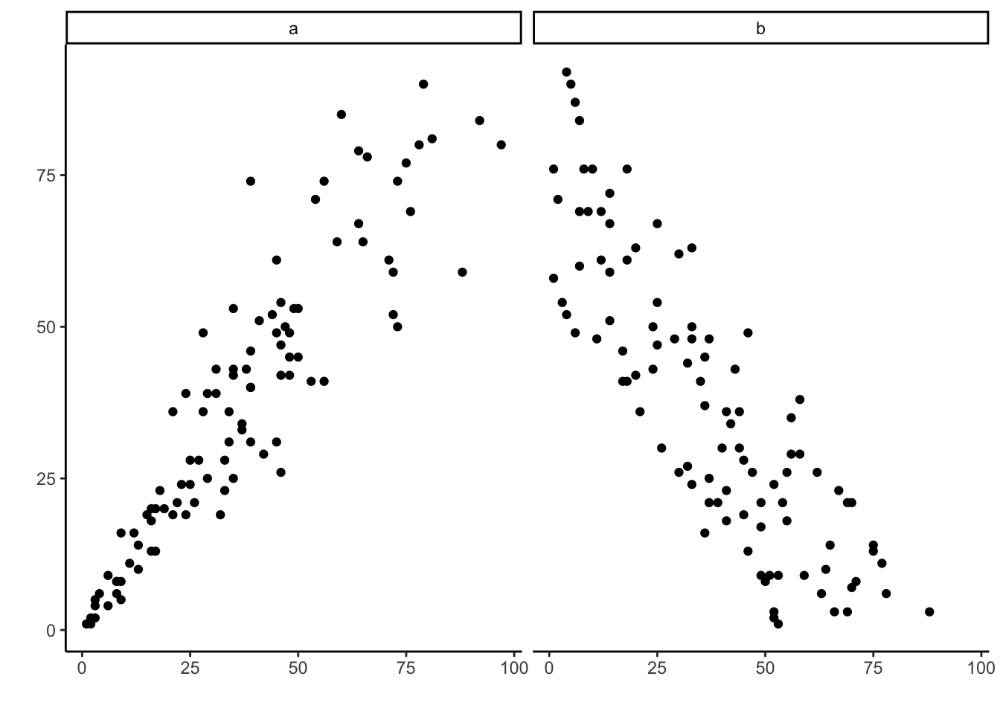

1 Introduction to Lifespan Development
Developmental Psychology, also known as Human Development or Lifespan Development, is the scientific study of ways in which people change, as well as stay the same, from conception to death. You will no doubt discover in the course of studying that the field examines change across a broad range of topics. These include physical and other psychophysiological processes, cognition, language, and psychosocial development, including the impact of family and peers.
Originally concerned with infants and children, the field has expanded to include adolescence and more recently, aging and the entire life span. Previously, the message was once you are 25, your development is essentially completed. Our academic knowledge of the lifespan has changed, and although there is still less research on adulthood than on childhood, adulthood is gaining increasing attention. This is particularly true now that the large cohort known as the “baby boomers” are beginning to enter late adulthood. The assumption that early childhood experiences dictate our future is also being called into question. Rather, we have come to appreciate that growth and change continues throughout life and experience continues to have an impact on who we are and how we relate to others. We now recognize that adulthood is a dynamic period of life marked by continued cognitive, social, and psychological development.
You will also discover that developmental psychologists investigate key questions, such as whether children are qualitatively different from adults or simply lack the experience that adults draw upon. Other issues that they deal with is the question of whether development occurs through the gradual accumulation of knowledge or through shifts from one stage of thinking to another, or if children are born with innate knowledge or figure things out through experience, and whether development is driven by the social context or something inside each child. From the above explanation, you may be thinking already that developmental psychology is related to other applied fields. You are very right. The field informs several applied fields in psychology, including, educational psychology, psychopathology, and forensic developmental psychology. It also complements several other basic research fields in psychology including social psychology, cognitive psychology, and comparative psychology. Lastly, it draws from the theories and research of several scientific fields including biology, sociology, health care, nutrition, and anthropology.
1.1 Lifespan Perspective
Learning Objectives: Lifespan Perspective
Explain the lifespan perspective and its assumptions about development.
Differentiate periods of human development.
Explain the issues underlying lifespan development
Identify the historical and contemporary theories impacting lifespan development
Paul Baltes identified several underlying principles of the lifespan perspective (Baltes, 1987; Baltes, Lindenberger, & Staudinger, 2006).
Development is lifelong. Lifespan theorists believe that development is life-long, and change is apparent across the lifespan. No single age period is more crucial, characterizes, or dominates human development. Consequently, the term lifespan development will be used throughout the textbook.
Development is multidirectional. Humans change in many directions. We may show gains in some areas of development, while showing losses in other areas. Every change, whether it is finishing high school, getting married, or becoming a parent, entails both growth and loss.
Development is multidimensional. We change across three general domains/dimensions; physical, cognitive, and psychosocial. The physical domain includes changes in height and weight, sensory capabilities, the nervous system, as well as the propensity for disease and illness. The cognitive domain encompasses the changes in intelligence, wisdom, perception, problem- solving, memory, and language. The psychosocial domain focuses on changes in emotion, self- perception and interpersonal relationships with families, peers, and friends. All three domains influence each other. It is also important to note that a change in one domain may cascade and prompt changes in the other domains. For instance, an infant who has started to crawl or walk will encounter more objects and people, thus fostering developmental change in the child’s understanding of the physical and social world.
Development is multidisciplinary. As mentioned at the start of the chapter, human development is such a vast topic of study that it requires the theories, research methods, and knowledge base of many academic disciplines.
Development is characterized by plasticity. Plasticity is all about our ability to change and that many of our characteristics are malleable. For instance, plasticity is illustrated in the brain’s ability to learn from experience and how it can recover from injury.
Development is multicontextual. Development occurs in many contexts. Baltes (1987) identified three specific contextual influences.
Normative age-graded influences: An age-grade is a specific age group, such as toddler, adolescent, or senior. Humans in a specific age-grade share particular experiences and developmental changes.
Normative history-graded influences: The time period in which you are born (see Table 1.1) shapes your experiences. A cohort is a group of people who are born at roughly the same period in a particular society. These people travel through life often experiencing similar circumstances.
| Generation | Born between … |
|---|---|
| Silent Generation | 1928 and 1945 |
| Baby Boomers | 1946 and 1964 |
| Generation X | 1965 and 1980 |
| Millennials | 1981-1996 |
| Generation Z | 1997-Present |
- Non-normative life influences: Despite sharing an age and history with our peers, each of us also has unique experiences that may shape our development. A child who loses his/her parent at a young age has experienced a life event that is not typical of the age group.
Another context that influences our lives is our social standing, socioeconomic status, or social class. Socioeconomic status (SES) is a way to identify families and households based on their shared levels of education, income, and occupation. While there is certainly individual variation, members of a social class tend to share similar lifestyles, patterns of consumption, parenting styles, stressors, religious preferences, and other aspects of daily life. All of us born into a class system are socially located, and we may move up or down depending on a combination of both socially and individually created limits and opportunities.
Families with higher socioeconomic status usually are in occupations (e.g., attorneys, physicians, executives) that not only pay better, but also grant them a certain degree of freedom and control over their job. Having a sense of autonomy or control is a key factor in experiencing job satisfaction, personal happiness, and ultimately health and well-being (Weitz, 2007). Those families with lower socioeconomic status are typically in occupations that are more routine, more heavily supervised, and require less formal education. These occupations are also more subject to job disruptions, including lay-offs and lower wages.
Poverty level is an income amount established by the federal government that is based on a set of income thresholds that vary by family size (United States Census Bureau, 2016). If a family’s income is less than the government threshold, that family is considered in poverty. Those living at or near poverty level may find it extremely difficult to sustain a household with this amount of income. Poverty is associated with poorer health and a lower life expectancy due to poorer diet, less healthcare, greater stress, working in more dangerous occupations, higher infant mortality rates, poorer prenatal care, greater iron deficiencies, greater difficulty in school, and many other problems. Members of higher income status may fear losing that status, but the poor may have greater concerns over losing housing.
Today we are more aware of the variations in development and the impact that culture and the environment have on shaping our lives. Culture is the totality of our shared language, knowledge, material objects, and behavior. It includes ideas about what is right and wrong, what to strive for, what to eat, how to speak, what is valued, as well as what kinds of emotions are called for in certain situations. Culture teaches us how to live in a society and allows us to advance because each new generation can benefit from the solutions found and passed down from previous generations. Culture is learned from parents, schools, houses of worship, media, friends and others throughout a lifetime. The kinds of traditions and values that evolve in a particular culture serve to help members function and value their own society. We tend to believe that our own culture’s practices and expectations are the right ones. This belief that our own culture is superior is called ethnocentrism and is a normal by- product of growing up in a culture. It becomes a roadblock, however, when it inhibits understanding of cultural practices from other societies. Cultural relativity is an appreciation for cultural differences and the understanding that cultural practices are best understood from the standpoint of that particular culture.
Culture is an extremely important context for human development and understanding development requires being able to identify which features of development are culturally based. This understanding is somewhat new and still being explored. Much of what developmental theorists have described in the past has been culturally bound and difficult to apply to various cultural contexts. The reader should keep this in mind and realize that there is still much that is unknown when comparing development across cultures.
Think of other ways culture may have affected your development. How might cultural differences influence interactions between teachers and students, nurses and patients, or other relationships?
Lifespan vs. Life expectancy: At this point you must be wondering what the difference between lifespan and life expectancy is, according to developmentalists. Lifespan, or longevity, refers to the length of time a species can exist under the most optimal conditions. For instance, the grey wolf can live up to 20 years in captivity, the bald eagle up to 50 years, and the Galapagos tortoise over 150 years (Smithsonian National Zoo, 2016). The longest recorded lifespan for a human was Jean Calment who died in 1994 at the age of 122 years, 5 months, and 14 days (Guinness World Records, 2016). Life expectancy is the predicted number of years a person born in a particular time period can reasonably expect to live (Vogt & Johnson, 2016).
1.1.1 Conceptions of Age
How old are you? Chances are you would answer that question based on the number of years since your birth, or what is called your chronological age. Ever felt older than your chronological age? Some days we might “feel” like we are older, especially if we are not feeling well, are tired, or are stressed out. We might notice that a peer seems more emotionally mature than we are, or that they are physically more capable. So years since birth is not the only way we can conceptualize age.
Biological age: Another way developmental researchers can think about the concept of age is to examine how quickly the body is aging, this is your biological age. Several factors determine the rate at which our body ages. Our nutrition, level of physical activity, sleeping habits, smoking, alcohol consumption, how we mentally handle stress, and the genetic history of our ancestors, to name but a few.
Psychological age: Our psychologically adaptive capacity compared to others of our chronological age is our psychological age. This includes our cognitive capacity along with our emotional beliefs about how old we are. An individual who has cognitive impairments might be 20 years of age, yet has the mental capacity of an 8-year-old. A 70- year-old might be travelling to new countries, taking courses at college, or starting a new business. Compared to others of our age group, we may be more or less adaptive and excited to meet new challenges. Remember you are as young or old as you feel.
Social age: Our social age is based on the social norms of our culture and the expectations our culture has for people of our age group. Our culture often reminds us whether we are “on target” or “off target” for reaching certain social milestones, such as completing our education, moving away from home, having children, or retiring from work. However, there have been arguments that social age is becoming less relevant in the 21st century (Neugarten, 1979; 1996). If you look around at your fellow students in your courses at college you might notice more people who are older than the more traditional aged college students, those 18 to 25. Similarly, the age at which people are moving away from the home of their parents, starting their careers, getting married or having children, or even whether they get married or have children at all, is changing.
Those who study lifespan development recognize that chronological age does not completely capture a person’s age. Our age profile is much more complex than this. A person may be physically more competent than others in their age group, while being psychologically immature. So, how old are you?
1.1.2 Periods of Development
| Age Period | Description |
| Prenatal | Starts at conception, continues through implantation in the uterine wall by the embryo, and ends at birth. |
| Infancy and Toddlerhood | Starts at birth and continues to two years of age |
| Early Childhood | Starts at two years of age until six years of age |
| Middle and Late Childhood | Starts at six years of age and continues until the onset of puberty |
| Adolescence | Starts at the onset of puberty until 18 |
| Emerging Adulthood | Starts at 18 until 25 |
| Early Adulthood | Starts at 25 until 40-45 |
| Middle Adulthood | Starts at 40-45 until 65 |
| Late Adulthood | Starts at 65 onward |
Table 1.2 reflects unique aspects of the various stages of childhood and adulthood that will be explored in this book. So, while both an 8-month old and an 8-year-old are considered children, they have very different motor abilities, social relationships, and cognitive skills. Their nutritional needs are different and their primary psychological concerns are also distinctive. The same is true of an 18-year-old and an 80-year-old, as both are considered adults.
Prenatal Development: Conception occurs and development begins. All of the major structures of the body are forming, and the health of the mother is of primary concern. Understanding nutrition, teratogens, or environmental factors that can lead to birth defects, and labor and delivery are primary concerns.
Infancy and Toddlerhood: The first two years of life are ones of dramatic growth and change. A newborn, with a keen sense of hearing but very poor vision, is transformed into a walking, talking toddler within a relatively short period of time. Caregivers are also transformed from someone who manages feeding and sleep schedules to a constantly moving guide and safety inspector for a mobile, energetic child.
Early Childhood: This period is also referred to as the preschool years and consists of the years which follow toddlerhood and precede formal schooling. As a two to six-year-old, the child is busy learning language, is gaining a sense of self and greater independence, and is beginning to learn the workings of the physical world.
Middle and Late Childhood: The ages of six to the onset of puberty comprise middle and late childhood, and much of what children experience at this age is connected to their involvement in the early grades of school. Now the world becomes one of learning and testing new academic skills and by assessing one’s abilities and accomplishments by making comparisons between self and others.
Adolescence: Adolescence is a period of dramatic physical change marked by an overall growth spurt and sexual maturation, known as puberty. It is also a time of cognitive change as the adolescent begins to think of new possibilities and to consider abstract concepts such as love, fear, and freedom. Ironically, adolescents have a sense of invincibility that puts them at greater risk of dying from accidents or contracting sexually transmitted infections that can have lifelong consequences.
Emerging Adulthood: The period of emerging adulthood is a transitional time between the end of adolescence and before individuals acquire all the benchmarks of adulthood. Continued identity exploration and preparation for full independence from parents are demonstrated. Although at one’s physiological peak, emerging adults are most at risk for involvement in violent crimes and substance abuse.
Early Adulthood: The twenties and thirties are identified as early adulthood. Intimate relationships, establishing families, and work are primary concerns at this stage of life.
Middle Adulthood: The forties through the mid-sixties is referred to as middle adulthood. This is a period in which aging becomes more noticeable and when many people are at their peak of productivity in love and work.
Late Adulthood: Late adulthood is sometimes subdivided into two categories: The young-old who are from 65-84 years and the oldest-old who are 85 years and older. One of the primary differences between these groups is that the young-old are still relatively healthy, productive, active, and the majority continue to live independently. With both age groups the risks of diseases such as, arteriosclerosis, cancer, and cerebral vascular disease increases substantially.

1.1.3 Issues in Lifespan Development
Nature and Nurture: Why are you the way you are? As you consider some of your features (height, weight, personality, being diabetic, etc.), ask yourself whether these features are a result of heredity or environmental factors, or both. Chances are, you can see the ways in which both heredity and environmental factors (such as lifestyle, diet, and so on) have contributed to these features. For decades, scholars have carried on the “nature/nurture” debate. For any particular feature, those on the side of nature would argue that heredity plays the most important role in bringing about that feature. Those on the side of nurture would argue that one’s environment is most significant in shaping the way we are. This debate continues in all aspects of human development, and most scholars agree that there is a constant interplay between the two forces. It is difficult to isolate the root of any single behavior as a result solely of nature or nurture.
Continuity versus Discontinuity: Is human development best characterized as a slow, gradual process, or is it best viewed as one of more abrupt change? The answer to that question often depends on which developmental theorist you ask and what topic is being studied. The theories of Freud, Erikson, Piaget, and Kohlberg are called stage theories. Stage theories or discontinuous development assume that developmental change often occurs in distinct stages that are qualitatively different from each other, and in a set, universal sequence. At each stage of development, children and adults have different qualities and characteristics. Thus, stage theorists assume development is more discontinuous. Others, such as the behaviorists, Vygotsky, and information processing theorists, assume development is a more slow and gradual process known as continuous development. For instance, they would see the adult as not possessing new skills, but more advanced skills that were already present in some form in the child. Brain development and environmental experiences contribute to the acquisition of more developed skills.

Active versus Passive: How much do you play a role in your own developmental path? Are you at the whim of your genetic inheritance or the environment that surrounds you? Some theorists see humans as playing a much more active role in their own development. Piaget, for instance believed that children actively explore their world and construct new ways of thinking to explain the things they experience. In contrast, many behaviorists view humans as being more passive in the developmental process.
Stability versus Change: How similar are you to how you were as a child? Were you always as out-going or reserved as you are now? Some theorists argue that the personality traits of adults are rooted in the behavioral and emotional tendencies of the infant and young child. Others disagree, and believe that these initial tendencies are modified by social and cultural forces over time.
1.1.4 Historical Theories on Development
Preformationist View: Well into the 18th century, children were merely thought of as little adults. Preformationism, or the belief that a tiny, fully formed human is implanted in the sperm or egg at conception and then grows in size until birth, was the predominant early theory. Children were believed to possess all their sensory capabilities, emotions, and mental aptitude at birth, and as they developed these abilities unfolded on a predetermined schedule (Thomas, 1979). The environment was thought to play no role in determining development.

{kind=link}
John Locke (1632-1704): Locke, a British philosopher, refuted the idea of innate knowledge and instead proposed that children are largely shaped by their social environments, especially their education as adults teach them important knowledge. He believed that through education a child learns socialization, or what is needed to be an appropriate member of society. Locke advocated thinking of a child’s mind as a tabula rasa or blank slate, and whatever comes into the child’s mind comes from the environment. Locke emphasized that the environment is especially powerful in the child’s early life because he considered the mind the most pliable then. Locke indicated that the environment exerts its effects through associations between thoughts and feelings, behavioral repetition, imitation, and rewards and punishments (Crain, 2005). Locke’s ideas laid the groundwork for the behavioral perspective and subsequent learning theories of Pavlov, Skinner and Bandura.
Jean-Jacques Rousseau (1712-1778): Like Locke, Rousseau also believed that children were not just little adults. However, he did not believe they were blank slates, but instead developed according to a natural plan which unfolded in different stages (Crain, 2005). He did not believe in teaching them the correct way to think, but believed children should be allowed to think by themselves according to their own ways and an inner, biological timetable. This focus on biological maturation resulted in Rousseau being considered the father of developmental psychology. Followers of Rousseau’s developmental perspective include Gesell, Montessori, and Piaget.
Arnold Gesell (1880-1961): Gesell spent 50 years at the Yale Clinic of Child Development, and with his colleagues he studied the neuromotor development of children. Gesell believed that the child’s development was activated by genes and he called this process maturation (Crain, 2005). Further, he believed that development unfolded in fixed sequences, and he opposed efforts to teach children ahead of schedule as he believed they will engage in behaviors when their nervous systems had sufficiently matured.
Sigmund Freud (1856-1939): Freud was a very influential figure in the area of development. Freud emphasized the importance of early childhood experiences in shaping our personality and behavior. In our natural state, we are biological beings and are driven primarily by instincts. During childhood, however, we begin to become social beings as we learn how to manage our instincts and transform them into socially acceptable behaviors. His assumptions were that personality formed during the first few years of life. The ways in which parents or other caregivers interacted with children were assumed to have a long-lasting impact on children’s emotional states. His beliefs formed the psychodynamic perspective and his theories of psychosexual development and psychopathology dominated the field of psychiatry until the growth of behaviorism in the 1950s.
However, Freud’s theory has been heavily criticized for several reasons. One is that it is very difficult to test scientifically (Crews, 1998). Freud suggested that much of what determines our actions were unknown to us, and as scientists we cannot measure these unconscious concepts. A second criticism is that Freud’s case studies were not validated and cannot be used as evidence for his theories. Many later theories, particularly behaviorism and humanism, came about as challenges to Freud’s views.

.jpg){kind=link}
1.1.5 Contemporary Theories on Development
Erikson (1902-1994) and Psychosocial Theory: Now, let’s turn to a less controversial psychodynamic theorist, Erik Erikson. Erikson presents eight developmental stages that encompass the entire lifespan. For that reason, Erikson’s psychosocial theory forms the foundation for much of our discussion of psychosocial development.

{kind=link}
Erikson (1950) proposed a model of lifespan development that provides a useful guideline for thinking about the changes we experience throughout life. Erikson broke with Freud’s emphasis on sexuality as the cornerstone of social-emotional development and instead suggested that social relationships fostered development. Erikson proposed that each period of life has a unique challenge or crisis that the person who reaches it must face, referred to as psychosocial crises. According to Erikson, successful development involves dealing with and resolving the goals and demands of each of these psychosocial crises in a positive way. These crises are usually called stages, although that is not the term Erikson used. If a person does not resolve a stage successfully, it may hinder their ability to deal with later stages. For example, the person who does not develop a sense of trust (Erikson’s first stage) may find it challenging as an adult to form a positive intimate relationship (Erikson’s sixth stage). Or an individual who does not develop a clear sense of purpose and identity (Erikson’s fifth stage) may become self-absorbed and stagnate rather than work toward the betterment of others (Erikson’s seventh stage).
However, most individuals are able to successfully complete the eight stages of his theory (See Table 1.3).
| Age range | Psychosocial crisis | Positive resolution of crisis |
| Birth to 12 to 18 months | Trust versus Mistrust | The child develops a feeling of trust in caregivers. |
| 18 months to 3 years | Autonomy versus Shame/Doubt | The child learns what can and cannot be controlled and develops a sense of free will. |
| 3 to 6 years | Initiative versus Guilt | The child learns to become independent by exploring, manipulating, and taking action. |
| 6 to 12 years | Industry versus Inferiority | The child learns to do things well or correctly according to standards set by others, particularly in school. |
| 12 to 18 years | Identity versus Role Confusion | The adolescent develops a well-defined and positive sense of self in relationship to others. |
| 19 to 40 years | Intimacy versus Isolation | The person develops the ability to give and receive love and to make long-term commitments. |
| 40 to 65 years | Generativity versus Stagnation | The person develops an interest in guiding the development of the next generation, often by becoming a parent. |
| 65 to death | Ego Integrity versus Despair | The person develops acceptance of how one has lived. |
Erikson’s theory has been criticized for focusing so heavily on crises and assuming that the completion of one crisis is a prerequisite for the next crisis of development. His theory also focused on the social expectations that are found in certain cultures, but not in all. For instance, the idea that adolescence is a time of searching for identity might translate well in the middle-class culture of the United States, but not as well in cultures where the transition into adulthood coincides with puberty through rites of passage and where adult roles offer fewer choices.
Learning Theory: Also known as Behaviorism, is based on the premise that it is not possible to objectively study the mind, and therefore psychologists should limit their attention to the study of behavior itself. The most famous behaviorist was Burrhus Frederick (B. F.) Skinner (1904–1990), who expanded the principles of behaviorism and also brought them to the attention of the public at large. Skinner used the ideas of stimulus and response, along with the application of rewards or reinforcements, to train pigeons and other animals. In addition, he used the general principles of behaviorism to develop theories about how best to teach children and how to create societies that were peaceful and productive (Skinner, 1957, 1968, 1972).
The behaviorists made substantial contributions to psychology by identifying the principles of learning. Although the behaviorists were incorrect in their beliefs that it was not possible to measure thoughts and feelings, their ideas provided new insights that helped further our understanding regarding the nature-nurture debate as well as the question of free will. The ideas of behaviorism are fundamental to psychology and have been developed to help us better understand the role of prior experiences in a variety of areas of psychology.
Social Learning Theory, or learning by watching others, was developed by Albert Bandura (1977). His theory calls our attention to the ways in which many of our actions are not learned through conditioning, as suggested by Skinner. Young children frequently learn behaviors through imitation. Especially when children do not know what else to do, they learn by modeling or copying the behavior of others.
Bandura (1986) suggests that there is interplay between the environment and the individual. We are not just the product of our surroundings, rather we influence our surroundings. There is interplay between our personality and the way we interpret events and how they influence us. This concept is called reciprocal determinism. An example of this might be the interplay between parents and children. Parents not only influence their child’s environment, perhaps intentionally through the use of reinforcement, etc., but children influence parents as well. Parents may respond differently with their first child than with their fourth. Perhaps they try to be the perfect parents with their firstborn, but by the time their last child comes along they have very different expectations, both of themselves and their child. Our environment creates us and we create our environment.
Other social influences: TV or not TV? Bandura, Ross and Ross (1963) began a series of studies to look at the impact of television on the behavior of children. Bandura began by conducting an experiment in which he showed children a film of a woman hitting an inflatable clown or “bobo” doll. Then the children were allowed in the room, where they found the doll and during their play they began to hit it. The children also demonstrated novel ways of being aggressive toward the doll that were not demonstrated by those children who did not see the aggressive model. Bandura’s research raised concerns about the impact of violence on young children. Since then, considerable research has been conducted on the impact of violent media on children’s aggression including playing video games.

Cognitive Theory: The cognitive theories focus on how our mental processes or cognitions change over time. Three important theories are Jean Piaget’s, Lev Vygotsky’s, and Information-processing.
Jean Piaget (1896-1980) was one of the most influential cognitive theorists in development. He was inspired to explore children’s ability to think and reason by watching his own children’s development. He was one of the first to recognize and map out the ways in which children’s intelligence differs from that of adults (Piaget, 1929). He became interested in this area when he was asked to test the IQ of children and began to notice that there was a pattern in their wrong answers. He believed that children’s intellectual skills change over time and that maturation, rather than training, brings about that change. Children of differing ages interpret the world differently. Piaget theorized that children progressed through four stages of cognitive development (see Table 1.4).
| Stage | Approximate age range | Characteristics | Stage attainments |
| Sensorimotor | Birth to about 2 years | Children experience the world through their fundamental senses of seeing, hearing, touching, and tasting. | Object permanence |
| Preoperational | 2 to 7 years | Children acquire the ability to internally represent the world through language and mental imagery. They also start to see the world from other people’s perspectives. | Theory of mind; rapid increase in language ability |
| Concrete operational | 7 to 11 years | Children become able to think logically. They can increasingly perform operations on objects that are real. | Conservation |
| Formal operational | 11 years to adulthood | Adolescents can think systematically, can reason about abstract concepts, and can understand ethics and scientific reasoning. | Abstract logic |
Piaget has been criticized for overemphasizing the role that physical maturation plays in cognitive development and in underestimating the role that culture and experience plays. Looking across cultures reveals considerable variation in what children are able to do at various ages. Research has shown considerable overlap among the four stages and that development is more continuous.
Lev Vygotsky (1896-1934) was a Russian psychologist who wrote in the early 1900s, but whose work was not discovered by researchers in the United States until the 1960s and became more widely known in the 1980s (Crain, 2005). His sociocultural theory emphasizes the importance of culture and interaction in the development of cognitive abilities. Vygotsky differed with Piaget in that he believed that a person not only has a set of abilities, but also a set of potential abilities that can be realized if given the proper guidance from others. Vygotsky developed theories on teaching that have been adopted by educators today.
Information Processing is not the work of a single theorist, but based on the ideas and research of several cognitive scientists studying how individuals perceive, analyze, manipulate, use, and remember information. This approach assumes that humans gradually improve in their processing skills; that is, cognitive development is continuous rather than stage-like. The more complex mental skills of adults are built from the primitive abilities of children. We are born with the ability to notice stimuli, store, and retrieve information. Brain maturation enables advancements in our information processing system. At the same time, interactions with the environment also aid in our development of more effective strategies for processing information.
Urie Bronfenbrenner (1917-2005) developed the Ecological Systems Theory, which provides a framework for understanding and studying the many influences on human development (Bronfenbrenner, 1979). Bronfenbrenner recognized that human interaction is influenced by larger social forces and that an understanding of these forces is essential for understanding an individual. The individual is impacted by several systems including:
Microsystem includes the individual’s setting and those who have direct, significant contact with the person, such as parents or siblings. The input of those is modified by the cognitive and biological state of the individual as well. These influence the person’s actions, which in turn influence systems operating on him or her.
Mesosystem includes two or more microsystems. These interactions between microsystems indirectly influence a person’s development. A child’s mesosystem may include their home microsystem and school microsystem, and how parents and friends interact might influence a child’s development.
Exosystem includes the larger contexts of community. A community’s values, history, and economy can impact the organizational structures it houses. Mesosystems both influence and are influenced by the exosystem.
Macrosystem includes the cultural elements, such as global economic conditions, war, technological trends, values, philosophies, and a society’s responses to the global community.
Chronosystem is the historical context in which these experiences occur. This relates to the different generational time periods previously discussed, such as the baby boomers and millennials.
In sum, a child’s experiences are shaped by larger forces, such as the family, schools, religion, culture, and time period. Bronfenbrenner’s model helps us understand all of the different environments that impact each one of us simultaneously. Despite its comprehensiveness, Bronfenbrenner’s ecological system’s theory is not easy to use. Taking into consideration all the different influences makes it difficult to research and determine the impact of all the different variables (Dixon, 2003). Consequently, psychologists have not fully adopted this approach, although they recognize the importance of the ecology of the individual. Figure 1.8 is a model of Bronfenbrenner’s Ecological Systems Theory.

{kind=link}
1.2 Research Methods
Learning Objectives: Research Methods
Define the scientific method
Compare research methods noting the advantages and disadvantages of each.
Explain research involving time spans
Explain ways to conduct ethical research
An important part of learning any science, including psychology, is having a basic knowledge of the techniques used in gathering information. The hallmark of scientific investigation is that of following a set of procedures designed to keep questioning or skepticism alive while describing, explaining, or testing any phenomenon. Science involves continuously renewing our understanding of the subjects in question and an ongoing investigation of how and why events occur. The scientific method is the set of assumptions, rules, and procedures scientists use to conduct research.
A research design is the specific method a researcher uses to collect, analyze, and interpret data. Psychologists use three major types of research designs in their research, and each provides an essential avenue for scientific investigation. Descriptive research is research that describes what is occurring at a particular point in time. Correlational research is research designed to discover relationships among variables and to allow the prediction of future events from present knowledge. Experimental research is research in which a researcher manipulates one or more variables to see their effects. Each of the three research designs varies according to its strengths and limitations.
1.2.1 Descriptive Research
Case Study: Sometimes the data in a descriptive research project are based on only a small set of individuals, often only one person or a single small group. These research designs are known as case studies which are descriptive records of one or a small group of individuals’ experiences and behavior. Sometimes case studies involve ordinary individuals. Developmental psychologist Jean Piaget observed his own children. More frequently, case studies are conducted on individuals who have unusual or abnormal experiences. The assumption is that by carefully studying these individuals, we can learn something about human nature. Case studies have a distinct disadvantage in that, although it allows us to get an idea of what is currently happening, it is usually limited to static pictures. Although descriptions of particular experiences may be interesting, they are not always transferable to other individuals in similar situations. They are also time consuming and expensive as many professionals are involved in gathering the information.
Observations: Another type of descriptive research is known as observation. When using naturalistic observation, psychologists observe and record behavior that occurs in everyday settings. For instance, a developmental psychologist might watch children on a playground and describe what they say to each other. However, naturalistic observations do not allow the researcher to have any control over the environment.
Laboratory observation, unlike the naturalistic observation, is conducted in a setting created by the researcher. This permits the researcher to control more aspects of the situation. One example of laboratory observation involves a systematic procedure known as the strange situation test, which you will learn about in chapter three. Concerns regarding laboratory observations are that the participants are aware that they are being watched, and there is no guarantee that the behavior demonstrated in the laboratory will generalize to the real world.
Survey: In other cases, the data from descriptive research projects come in the form of a survey, which is a measure administered through either a verbal or written questionnaire to get a picture of the beliefs or behaviors of a sample of people of interest. The people chosen to participate in the research, known as the sample, are selected to be representative of all the people that the researcher wishes to know about called the population. A representative sample would include the same percentages of males, females, age groups, ethnic groups, and socio-economic groups as the larger population.
Surveys gather information from many individuals in a short period of time, which is the greatest benefit for surveys. Additionally, surveys are inexpensive to administer. However, surveys typically yield surface information on a wide variety of factors but may not allow for in-depth understanding of human behavior. Another problem is that respondents may lie because they want to present themselves in the most favorable light, known as social desirability. They also may be embarrassed to answer truthfully or are worried that their results will not be kept confidential. Additionally, questions can be perceived differently than intended.
How many surveys have you taken?
Interviews: Rather than surveying participants, they can be interviewed which means they are directly questioned by a researcher. Interviewing participants on their behaviors or beliefs can solve the problem of misinterpreting the questions posed on surveys. The examiner can explain the questions and further probe responses for greater clarity and understanding. Although this can yield more accurate results, interviews take longer and are more expensive to administer than surveys. Participants can also demonstrate social desirability, which will affect the accuracy of the responses.
Psychophysiological Assessment: Researchers may also record psychophysiological data, such as measures of heart rate, hormone levels, or brain activity to help explain development. These measures may be recorded by themselves or in combination with behavioral data to better understand the bidirectional relations between biology and behavior. Special equipment has been developed to allow researchers to record the brain activity of very young and very small research subjects. One manner of understanding associations between brain development and behavioral advances is through the recording of event-related potentials (ERPs). ERPs are recorded by fitting a research participant with a stretchy cap that contains many small sensors or electrodes. These electrodes record tiny electrical currents on the scalp of the participant in response to the presentation of stimuli, such as a picture or a sound.
The use of ERPs has provided important insight as to how infants and children understand the world around them. Webb, Dawson, Bernier, and Panagiotides (2006) examined face and object processing in children with autism spectrum disorders, those with developmental delays, and those who were typically developing. The children wore electrode caps and had their brain activity recorded as they watched still photographs of faces of their mother or of a stranger, and objects, including those that were familiar or unfamiliar to them. The researchers examined differences in face and object processing by group by observing a component of the brainwaves. Findings suggest that children with autism are in some way processing faces differently than typically developing children and those with more general developmental delays.
Secondary/Content Analysis involves analyzing information that has already been collected or examining documents or media to uncover attitudes, practices or preferences. There are a number of data sets available to those who wish to conduct this type of research. For example, the U. S. Census Data is available and widely used to look at trends and changes taking place in the United States. The researcher conducting secondary analysis does not have to recruit subjects, but does need to know the quality of the information collected in the original study.
1.2.2 Correlational Research
In contrast to descriptive research, which is designed primarily to provide static pictures, correlational research involves the measurement of two or more relevant variables and an assessment of the relationship between or among those variables. For instance, the variables of height and weight are systematically related (correlated) because taller people generally weigh more than shorter people.
The Pearson Correlation Coefficient, symbolized by the letter r, is the most common statistical measure of the strength of linear relationships among variables. The value of the correlation coefficient ranges from r= –1.00 to r = +1.00. The strength of the linear relationship is indexed by the distance of the correlation coefficient from zero (its absolute value). For instance, r = –.54 is a stronger relationship than r= .30, and r = .72 is a stronger relationship than r = –.57. The direction of the linear relationship is indicated by the sign of the correlation coefficient. Positive values of r (such as r = .54 or r = .67) indicate that the relationship is positive (i.e., the pattern of the dots on the scatter plot runs from the lower left to the upper right), whereas negative values of r (such as r = –.30 or r = –.72) indicate negative relationships (i.e., the dots run from the upper left to the lower right).
When the straight line indicates that individuals who have high values for one variable also tend to have high values for the other variable, as in part (a), the relationship is said to be a positive correlation. Examples of positive correlations include those between education and income, and between age and mathematical abilities in children. In each case people who score higher on one of the variables also tend to score higher on the other variable. Negative correlations, in contrast, as shown in part (b), occur when high values for one variable tend to be associated with low values for the other variable. Examples of negative correlations include those between the age of a child and the number of diapers the child uses, and between practice and errors made on a learning task. In these cases, people who score higher on one of the variables tend to score lower on the other variable.

An important limitation of correlational research designs is that they cannot be used to draw conclusions about the causal relationships among the measured variables. Consider, for instance, a researcher who has hypothesized that viewing violent behavior will cause increased aggressive play in children. He has collected, from a sample of fourth-grade children, a measure of how much violent television each child views during the week, as well as a measure of how aggressively each child plays. The researcher discovers a positive correlation between the two measured variables. Although this positive correlation appears to support the hypothesis, it cannot be taken to indicate that viewing violent television causes aggressive behavior as there are other possible explanations. One alternative is that children who behaved aggressively at school want to watch violent television shows. Still another possible explanation for the observed correlation is that it has been produced by the presence of a third variable.
A third variable is a variable that is not part of the research hypothesis but produces the observed correlation between them. In our example a potential third variable is the discipline style of the children’s parents. Parents who use a harsh and punitive discipline style may produce children who both like to watch violent television and who behave aggressively in comparison to children whose parents use less harsh discipline.
For this reason, we are left with the basic limitation of correlational research: Correlation does not demonstrate causation! It is important that when you read about correlational research projects, you keep in mind the possibility of third variables.
Strengths and limitations: Correlational research can be used when experimental research is not possible because the variables cannot be manipulated or it would be unethical to use an experiment. Correlational designs also have the advantage of allowing the researcher to study behavior as it occurs in everyday life. We can also use correlational designs to make predictions. For instance, we can predict from the scores on a battery of tests the success of job trainees during a training session. However, we cannot use such correlational information to determine whether one variable caused another variable. For that, researchers rely on an experiment.
1.2.3 Experimental Research
The goal of the experimental method is to provide more definitive conclusions about the causal relationships among the variables in a research hypothesis than what is available from correlational research. Experiments are designed to test hypotheses, or specific statements about the relationship between variables. Experiments are conducted in a controlled setting in an effort to explain how certain factors or events produce outcomes. A variable is anything that changes in value. In the experimental research design, the variables of interest are called the independent variable and the dependent variable. The independent variable in an experiment is the causing variable that is created or manipulated by the experimenter. The dependent variable in an experiment is a measured variable that is expected to be influenced by the experimental manipulation.
A good experiment randomly assigns participants to at least two groups that are compared. The experimental group receives the treatment under investigation, while the control group does not receive the treatment the experimenter is studying as a comparison. For instance, to assess whether violent TV affects aggressive behavior the experimental group might view a violent television show, while the control group watches a non-violent show. Additionally, experimental designs control for extraneous variables, or variables that are not part of the experiment that could inadvertently affect either the experimental or control group, thus distorting the results.
Despite the advantage of determining causation, experiments do have limitations. One is that they are often conducted in laboratory situations rather than in the everyday lives of people. Therefore, we do not know whether results that we find in a laboratory setting will necessarily hold up in everyday life. Second, and more important, is that some of the most interesting and key social variables cannot be experimentally manipulated because of ethical concerns. If we want to study the influence of abuse on children’s development of depression, these relationships must be assessed using correlational designs because it is simply not ethical to experimentally manipulate these variables. Characteristics of descriptive, correlational, and experimental research designs can be found in Table 1.5.
| Research Design | Goal | Advantages | Disadvantages |
| Descriptive | To create a snapshot of the current state of affairs | Provides a relatively complete picture of what is occurring at a given time. Allows the development of questions for further study. | Does not assess relationships among variables. May be unethical if participants do not know they are being observed. |
| Correlational | To assess the relationships between and among two or more variables | Allows testing of expected relationships between and among variables and the making of predictions. Can assess these relationships in everyday life events. | Cannot be used to draw inferences about the causal relationships between and among the variables. |
| Experimental | To assess the causal impact of one or more experimental manipulations on a dependent variable | Allows drawing of conclusions about the causal relationships among variables. | Cannot experimentally manipulate many important variables. May be expensive and time consuming. |
1.2.4 Research Involving Time-Spans
Cross-sectional research compares samples that represent a cross-section of the population who vary in age. Participants might be asked to complete a survey or take a test of some physical or cognitive skill. The attitudes or skill levels based on age are compared. In cross-sectional research, respondents are measured only once, and consequently this method is not expensive or time consuming. In addition, because participants are only tested at one point in time, practice effects are not an issue as children do not have the opportunity to become better at the task over time. There is also no need to keep in contact with, or follow-up with, participants over time.

However, cross-sectional research does not allow the researcher to look at the impact of having been born in a certain time-period, which is known as the cohort effect. For example, those born during the depression have very different views about and experiences with the internet than those born in the last twenty years. Different attitudes about the Internet, for example, might not be due to a person’s biological age as much as their life experiences as members of a cohort.
Longitudinal research involves studying a group of people who are the same age, and measuring them repeatedly over a period-of-time. This type of design allows researchers to study individual differences in development. Longitudinal studies may be conducted over the short term, such as a span of months, or over much longer durations including years or decades. For these reasons, longitudinal research designs are optimal for studying stability and change over time.

Problems with longitudinal research include being very time consuming and expensive. Researchers must maintain continued contact with participants over time, and these studies necessitate that scientists have funding to conduct their work over extended durations. An additional risk is attrition. Attrition occurs when participants fail to complete all portions of a study. Participants may move, change their phone numbers, or simply become disinterested in participating over time. Researchers should account for the possibility of attrition by enrolling a larger sample into their study initially, as some participants will likely drop out over time. Even with a large sample size, the experimenter never knows if there was something different about the individuals who dropped out versus those that remained in the study.
The results from longitudinal studies may also be impacted by repeated assessments. Consider how well you would do on a math test if you were given the exact same exam every day for a week. Your performance would likely improve over time not necessarily because you developed better math abilities, but because you were continuously practicing the same math problems. This phenomenon is known as a practice effect. Practice effects occur when participants become better at a task over time because they have done it again and again; not due to natural psychological development.
Sequential research includes elements of both longitudinal and cross-sectional research designs. Similar to longitudinal designs, sequential research features participants who are followed over time; similar to cross-sectional designs, sequential work includes participants of different ages. This research design is also distinct from those that have been discussed previously in that individuals of different ages are enrolled into a study at various points in time to examine age-related changes, development within the same individuals as they age, and account for the possibility of cohort effects.

For example, in a study with a sequential design, a researcher might enroll three separate groups of children (Groups A, B, and C). Children in Group A would be enrolled when they are 2 years old and would be tested again when they are 4 and 6 years old. This is similar in design to the longitudinal study described previously. Children in Group B would also be enrolled when they are 2 years old, but this would occur two years later when Group A is now 4 years old. Finally, children in Group C would be enrolled when they are 2 years old and Group A is now 6 and Group B is now 4. At this time, the children would represent a cross-sectional design (2, 4, and 6 years of age). Further, along the diagonal children of the same age can be compared to determine if cohort effects are evident. Sequential designs are appealing because they allow researchers to learn a lot about development in a relatively short amount of time.
Because they include elements of longitudinal and cross-sectional designs, sequential research has many of the same strengths and limitations as these other approaches. For example, sequential work may require less time and effort than longitudinal research, but more time and effort than cross-sectional research. Although practice effects may be an issue if participants are asked to complete the same tasks or assessments over time, attrition may be less problematic than what is commonly experienced in longitudinal research since participants may not have to remain involved in the study for such a long period-of-time. Figure 1.14 identifies advantages and disadvantages for each of the described time span research design.

1.2.5 Conducting Ethical Research
One of the issues that all scientists must address concerns the ethics of their research. Research in psychology may cause some stress, harm, or inconvenience for the people who participate in that research. Psychologists may induce stress, anxiety, or negative moods in their participants, expose them to weak electrical shocks, or convince them to behave in ways that violate their moral standards. Additionally, researchers may sometimes use animals, potentially harming them in the process.
Decisions about whether research is ethical are made using established ethical codes developed by scientific organizations, such as the American Psychological Association, and federal governments. In the United States, the Department of Health and Human Services provides the guidelines for ethical standards in research. The following are the American Psychological Association code of ethics when using humans in research (APA, 2016).
No Harm: The most direct ethical concern of the scientist is to prevent harm to the research participants.
Informed Consent: Researchers must obtain informed consent, which explains as much as possible about the true nature of the study, particularly everything that might be expected to influence willingness to participate. Participants can withdraw their consent to participate at any point.
Infants and young children cannot verbally indicate their willingness to participate, much less understand the balance of potential risks and benefits. As such, researchers are oftentimes required to obtain written informed consent from the parent or legal guardian of the child participant. Further, this adult is almost always present as the study is conducted. Children are not asked to indicate whether they would like to be involved in a study until they are approximately seven years old. Because infants and young children also cannot easily indicate if they would like to discontinue their participation in a study, researchers must be sensitive to changes in the state of the participant, such as determining whether a child is too tired or upset to continue, as well as to what the parent desires. In some cases, parents might want to discontinue their involvement in the research. As in adult studies, researchers must always strive to protect the rights and well-being of the minor participants and their parents when conducting developmental research.
Confidentiality: Researchers must also protect the privacy of the research participants’ responses by not using names or other information that could identify the participants.
Deception: Deception occurs whenever research participants are not completely and fully informed about the nature of the research project before participating in it. Deception may occur when the researcher tells the participants that a study is about one thing when in fact it is about something else, or when participants are not told about the hypothesis.
Debriefing: At the end of a study debriefing, which is a procedure designed to fully explain the purposes and procedures of the research and remove any harmful aftereffects of participation, must occur.
1.3 References
American Psychological Association. (2016). Revision of ethical standards of 3.04 of the “Ethical Principles of Psychologists and Code of Conduct” (2002, as amended 2010). American Psychologist, 71, 900.
Baltes, P. B. (1987). Theoretical propositions of life span developmental psychology: On the dynamics between growth and decline. Developmental Psychology, 23, 611-626.
Baltes, P. B., Lindenberger, U., & Staudinger, U. M. (2006). Life span theory in developmental psychology. In W. Damon, & R. M. Lerner (Eds.), Handbook of child psychology, 6th edition (pp. 569-664). Hoboken, NJ: John Wiley & Sons.
Bandura, A. (1977). Social learning theory. New York: General Learning Press.
Bandura, A. (1986). Social foundations of thought and action: A social-cognitive theory. Upper Saddle River, NJ: Prentice Hall.
Bandura, A, Ross, D. &. Ross S. (1963). Imitation of film-mediated aggressive models. Journal of Abnormal and Social Psychology, 66, 3-11.
Bronfenbrenner, U. (1979). The ecology of human development: Experiments by nature and design. Cambridge, MA: Harvard University Press.
Crain, W. (2005). Theories of development concepts and applications (5th ed.). New Jersey: Pearson.
Crews, F. C. (1998). Unauthorized Freud: Doubters confront a legend. New York, NY: Viking Press.
Dixon, W. E. (2003). Twenty studies that revolutionized child psychology. Upper Saddle River, NJ: Prentice Hall.
Erikson, E. H. (1950). Childhood and society. New York: Norton.
Guinness World Records. (2016). Oldest person (ever). Retrieved from http://www.guinnessworldrecords.com/search?term=oldest+person+%28ever%29
Neugarten, B. L. (1979). Policy for the 1980s: Age or need entitlement? In J. P. Hubbard (Ed.), Aging: Agenda for the eighties, a national journal issues book (pp. 48-52). Washington, DC: Government Research Corporation.
Neugarten, D. A. (Ed.) (1996). The meanings of age. Chicago, IL: The University of Chicago Press.
Piaget, J. (1929). The child’s conception of the world. NY: Harcourt, Brace Jovanovich.
Smithsonian National Zoo. (2016). Retrieved from http://nationalzoo.si.edu/
Skinner, B. (1957). Verbal behavior. Acton, MA: Copley.
Skinner, B. (1968). The technology of teaching. New York, NY: Appleton-Century-Crofts.
Skinner, B. (1972). Beyond freedom and dignity. New York, NY: Vintage Books.
Thomas, R. M. (1979). Comparing theories of child development. Santa Barbara, CA: Wadsworth.
United States Census Bureau. (2016). Poverty. Retrieved from http://www.census.gov/topics/income-poverty/poverty/about/glossary.html
Vogt, W.P., & Johnson, R.B. (2016). The SAGE dictionary of statistics and methodology. Los Angeles, CA: Sage
Webb, S. J., Dawson, G., Bernier, R., & Panagiotides, H. (2006). ERP evidence of atypical face processing in young children with autism. Journal of Autism and Developmental Disorders, 36, 884-890. doi: 10.1007/s10803-006-0126-x
Weitz, R. (2007). The sociology of health, illness, and health care: A critical approach, (4th ed.). Belmont, CA: Thomson.